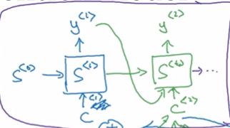

1. Seq2Seq模型存在的问题

先输入整个原文序列，再输出整个翻译序列。
事实上，如果原文序列很长，一次性记住全部内容是困难的。因此导致翻译结果不好。
改进方法：attention based模型，一次读入一部分，根据部分信息提供输出，然后再读入一些信息。
Bahdanau et, al., 2014 Neural machine translation by jointly learning to align and translate
2. 注意力模型的结构
2.1. encoder
使用双向RNN来计算每个单词的特征。双向RNN的unit可以是GRU或LSTM或其它类型的Unit。
每个单词通过双向RNN会得到2个activition，分别定义为\overrightarrow{a^t}和\overleftarrow{a^t}。并用一个符号来表现这两个activation。
a^t = (\overrightarrow{a^t}, \overleftarrow{a^t})
2.2. decoder
decoder部分的结构和翻译模型是基本上一样的。

decoder使用某个context作为输入，context用向量C表示，是一个与encoder中的activation有关的向量。
2.3. 注意力权重
关键在于怎样连接encoder与decoder。翻译模型使用顺序连接，先encoder，再decoder。
注意力模型使用注意力权重将encoder的activation和decoder的context联系到一起。
定义注意力权重为：当生成y的第t1个单词时，对原文第t2个词的注意力应该是多少？
3. 注意力模型的计算过程
注意和的区别。
由于输入序列和输出序列是两个不同的序列，分别用于t1、t2表示输出序列和输入序列的时间步。
整体计算过程为：

3.1. x→ax \rightarrow ax→a
Encoder
3.2. a→ea \rightarrow ea→e
根据t2时间步的Encoder输出和t1-1时间步的Decoder中间状态，计算出t1时间对t2时间的注意力。
可以看作是嵌入了一个简单的网络。
3.3. e→αe \rightarrow \alphae→α
以及t2为维度为e作为归一化，使得归一伦后
3.4. α→C\alpha \rightarrow Cα→C
根据归一化后的注意力权重计算Decoder的输入。
3.5. C→sC \rightarrow sC→s
Decoder
3.6. s→ys \rightarrow ys→y
输出
4. 时间复杂度
注意力模型的时间复杂度为，复杂度有点高。
由于机器翻译的输入、输出通常不是会太，因此也是可以接受的。